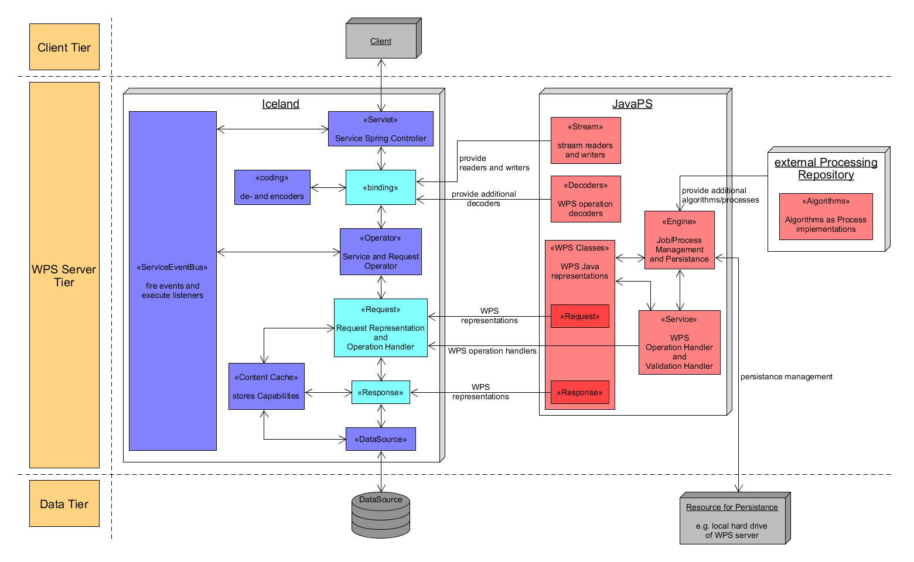

JavaPS Documentation - Architectural Details
Architectural Details
JavaPS is based on another 52°North project named Iceland. The following UML diagram highlights the core architectural aspects. To be precise, it shows the main components of Icelands generic infrastructure that ensures equal handling of different OGC Web services. Furthermore, the diagram also explains, how JavaPS extends the generic Iceland infrastructure by offering several WPS specific components and Java implementations. Hereby, the notation of UML component diagrams is used. For clarification, the notation is explained in the following. On the left side, the three yellow boxes indicate the three tiers client, server and data of classical 3-Tier Web service architectures. While the client and data tier contain few elements, the core attention should be paid on the server tier. It illustrates that Iceland provides the main infrastucture to handle client requests and manage the whole request lifecycle comprising the tasks request receival, identification of suitable request handler to process the request as well as the creation the response object. Hence, Iceland is split into several key components, as shown in the subsequent diagram. While the blue coloured infrastructure components are completely provided by Iceland, those coloured in cyan are implemented and offered by JavaPS to create a WPS specific application. For separation purposes the main components of JavaPS are coloured in red. Each components name is enclosed in "<< >>" to separate it from its description. Arrows within the diagram indicate that the connected resources work together. Where necessary, arrows are annotated to clarify their task.
System Architecture
Subsequently, the basic components and their interaction and dependencies are explained. First Iceland components are explained. Afterwards, special attention is paid to the additions provided by JavaPS.
Iceland:
- Iceland - Servlet/Service: Iceland is based on the open source Spring Framework, which offers essential receival of incoming requests as well as other benefits like dependency injection and bean/component handling. Hence, the Servlet component within Iceland is offered by Spring (so-called DispatcherServlet). Building on Springs infrastructure, Iceland provides a Service component as central Spring Controller. Note that a Spring Controller is required to handle incoming Web requests within the application. While in theory, an application may implement multiple Controllers, Iceland uses a single Spring Controller to react on arbitrary Web requests targeting different OGC Web service operations (e.g. GetCapabilities or WPS DescribeProcess operation).
- Iceland - Binding and coding: After receival of a request, the Binding component uses de- and encoders to determine the binding of the request. Possible bindings might be KVP (Key Value Pair) for HTTP GET or POX (Plain Old XML), SOAP (Simple Object Access Protocol) and JSON (JavaScript Object Notation) for HTTP POST requests. For each binding, a separate implementation exists to properly parse the request. Here, JavaPS may implement additional Bindings or de- and encoders specific for WPS operations and register them via Spring configuration files as explained below.
- Iceland - Operator: As Iceland is organised in a generic manner, it provides generic components ServiceOperator and RequestOperator to manage arbitrary OGC request from arbitrary OGC Web services. They are used to derive the appropriate Request object and OperationHandler, as described next.
- Iceland - Request, Response and OperationHandler: For each supported operation of an OGC Web service, Iceland requires suitable Request, Response and OperationHandler implementations. However, each different OGC Web service defines different operations that have to be supported. Only the GetCapabilities operation is equal for ALL OGC Web services and is thus directly implemented within Iceland (to be correct, only the GetCapabilitiesHandler has to be provided by JavaPS). Hence, JavaPS provides the missing WPS Request, Response and OperationHandler implementations for the operations DescribeProcess, Execute, GetStatus, GetResult and Dismiss. The general workflow uses the OperationHandler to extract and process the information from the Request object and to compute the associated Response object.
- Iceland - Content Cache: As mentioned above, the GetCapabilities operation handling is completely implemented within Iceland (only the GetCapabilitiesHandler has to be provided by JavaPS). The Capabilities document contains basic information about the associated OGC Web service (service identification and service provider) as well as service specific details. E.g., for a WPS it contains information about available processes. To keep access to the storing data source minimal, Iceland implements a Capabilities Content Cache that holds the necessary Capabilities information in main memory and which is updated on data changes or on a regular time interval. The benefit is a faster and resource-saving processing of GetCapabilities requests, as the information can be taken from main memory instead of extracting it from the original data source.
- Iceland - DataSource: The DataSource component manages access to the underlying data source from the Data Tier. This is especially necessary when updating the Content Cache described above.
JavaPS:
As already explained, the generic infrastructure of Iceland is concretized through JavaPS in order to create a WPS oriented Web application. For this reason, JavaPS supplements key components by specializing the abstract interfaces of Iceland. In short, the following list presents the main parts of JavaPS:
- JavaPS - Stream: A Streaming component supports Icelands Binding component and is used to read/parse requests and write responses.
- JavaPS - Decoders: In order to correctly parse requests, additional Decoders might be offered. This supplements the Binding component of Iceland.
- JavaPS - WPS Classes: Additional WPS specific Java representations have to be provided within the scope of handling WPS operations. As exemplary components Requests and Responses are implemented and used within Icelands execution workflow. Of course, also the actual operation handling and job management within JavaPS requires several WPS specific Java classes. E.g., the following two components Engine and Service also make use of WPS Classes.
- JavaPS - Engine: The Engine component implements the job and persistence management. In short it is responsible for planning and executing WPS processes/jobs and offer mechanisms to persist and retrieve computed results as well as general job information (e.g. Job Status). For instance, the Engine might use the local hard drive of the application server to persist job information within JSON files or complex output results as files of their own. A process is implemented as Algorithm and the available Algorithms are stored within AlgorithmRepositories. Not only can Algorithms be implemented within JavaPS but can also be added via external Processing/Algorithm Repositories, that only offer additional Algorithm implementations.
- JavaPS - Service: The last main part of JavaPS is to provide implementations of OperationHandler and ValidationHandler to handle WPS requests. Hence, for each WPS operation (GetCapabilities, DescribeProcess, Execute, GetStatus, GetResult, Dismiss) , JavaPS implements one OperationHandler. ValidationHandlers are required to check and validate each request. E.g. within some WPS operations, a parameter jobId has to be included that references an existing process/algorithm within JavaPS, otherwise an exception can be thrown. By offering the appropriate OperationHandler, the responsibility of handling and answering WPS request is assigned to JavaPS. For most WPS requests, the OperationHandler make use of the Engine to perform actions related to a certain job (e.g. create and execute a new job or retrieve the results of finished jobs).
Overview of Maven Modules
JavaPS and Iceland both use Apache Maven as build automation tool to manage project dependencies and external libraries. JavaPS defines several sub-modules, each dedicated to a certain task. The following table shows each Maven module and its task:
Overview of JavaPS Maven Modules and their Tasks
| Maven Module Name | Task |
|---|---|
| core | provides Java representations of WPS requests and responses |
| engine | implements the necessary processing engine to execute and manage jobs |
| iceland-stream | provides (XML) stream readers and writers |
| iceland-wps | provides elementary Java representations/implementations of all relevant WPS components defined within the official WPS 2.0 standard of the OGC |
| kvp | provides additional KVP decoders for each WPS 2.0 operations (except Execute) |
| service | provides operation validators and handlers for each WPS 2.0 operation |
| xml | provides helper components for interacting with XML requests/responses of WPS operations |
| webapp | provides deployment descriptor etc. |
Spring Bean Configuration
Iceland is based on the Spring Framework. By declaring certain Java classes as so-called beans, Spring's dependency injection mechanism can be used to automatically inject these beans into other components. Iceland and JavaPS make use of classic XML configuration files for bean declaration. For this reason, each Maven module of JavaPS comprises a number of bean declaration XML files that are located in src/main/resources/components/.